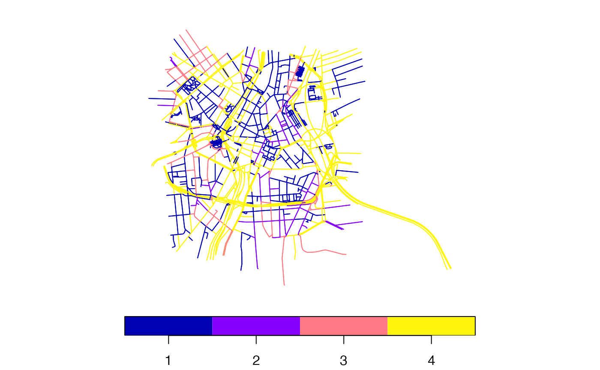

Before routing, it helps to look at the network: whether the points reach the streets, which streets each mode may use, where the stops are, on which dates services run and what is wrong with the feeds. This page uses the São Paulo sample that ships with the package.
library(peabiru)
data_path <- system.file("extdata/spo", package = "peabiru")
network <- build_network(data_path, n_threads = 2)
network
#> <peabiru_network>
#> data path: /Users/leite/Github/peabiru-routing/.claude/scratch/sessao-1112/ns/rlib-015/peabiru/extdata/spo
#> streets: 2,609 vertices, 5,518 edges
#> transit: 1 feed(s) (spo_gtfs), 654 stops, 36 patterns, 6 services, frequency-based trips
#> elevation: NONEWhere points snap
Routing starts and ends at the nearest point of a street the mode may
use, looked for within 300 m and then within radius.
find_snap() shows where that is, and how far:
points <- read.csv(file.path(data_path, "spo_points.csv"))
snap <- find_snap(network, points, mode = "CAR")
head(snap)
#> # A tibble: 6 × 7
#> point_id lat lon snap_lat snap_lon distance found
#> <chr> <dbl> <dbl> <dbl> <dbl> <dbl> <lgl>
#> 1 89a8100c00fffff -23.6 -46.6 -23.6 -46.6 78.4 TRUE
#> 2 89a8100c007ffff -23.6 -46.6 -23.6 -46.6 53.7 TRUE
#> 3 89a8100c077ffff -23.6 -46.6 -23.6 -46.6 0.768 TRUE
#> 4 89a8100c03bffff -23.6 -46.6 -23.6 -46.6 1.38 TRUE
#> 5 89a8100c033ffff -23.6 -46.6 -23.6 -46.6 42.6 TRUE
#> 6 89a8100c0afffff -23.6 -46.6 -23.6 -46.6 132. TRUE
summary(snap$distance)
#> Min. 1st Qu. Median Mean 3rd Qu. Max.
#> 0.7684 42.8258 77.2961 90.9706 136.3365 241.4890A point that does not snap (found = FALSE) is not routed
and has no rows in the results.
The street network
street_network_bbox() gives the extent of the street
network, and street_network_to_sf() its vertices and edges
as sf, with the modes each edge allows, the car speed and
the level of traffic stress for cyclists:
street_network_bbox(network, output = "vector")
#> xmin ymin xmax ymax
#> -46.64771 -23.56534 -46.61130 -23.53711
streets <- street_network_to_sf(network)
head(streets$edges[, c("edge_index", "osm_id", "street_class", "length",
"walk", "car", "car_speed", "bicycle", "bicycle_lts")])
#> Simple feature collection with 6 features and 9 fields
#> Geometry type: LINESTRING
#> Dimension: XY
#> Bounding box: xmin: -46.63534 ymin: -23.55117 xmax: -46.63387 ymax: -23.542
#> Geodetic CRS: WGS 84
#> # A tibble: 6 × 10
#> edge_index osm_id street_class length walk car car_speed bicycle
#> <int> <dbl> <chr> <dbl> <lgl> <lgl> <dbl> <lgl>
#> 1 0 4331470 OTHER 179. FALSE TRUE 50.0 TRUE
#> 2 1 4331470 OTHER 179. FALSE FALSE 50.0 FALSE
#> 3 2 8103459 OTHER 73.6 TRUE TRUE 20.0 TRUE
#> 4 3 8103459 OTHER 73.6 TRUE TRUE 20.0 TRUE
#> 5 4 8103459 OTHER 27.0 TRUE TRUE 20.0 TRUE
#> 6 5 8103459 OTHER 27.0 TRUE TRUE 20.0 TRUE
#> # ℹ 2 more variables: bicycle_lts <int>, geometry <LINESTRING [°]>
table(streets$edges$bicycle_lts)
#>
#> 1 2 3 4
#> 2120 313 519 2270
plot(streets$edges["bicycle_lts"], main = NULL, key.pos = 1)
The transit network
transit_network_to_sf() gives the stops (with whether
each is linked to the street network) and one line per trip pattern of
each route:
transit <- transit_network_to_sf(network)
head(transit$stops)
#> Simple feature collection with 6 features and 4 fields
#> Geometry type: POINT
#> Dimension: XY
#> Bounding box: xmin: -46.61977 ymin: -23.54202 xmax: -46.6146 ymax: -23.53415
#> Geodetic CRS: WGS 84
#> # A tibble: 6 × 5
#> stop_index stop_id stop_name linked_to_street geometry
#> <int> <chr> <chr> <lgl> <POINT [°]>
#> 1 0 spo_gtfs:1000… R. Silva… TRUE (-46.61467 -23.53415)
#> 2 1 spo_gtfs:1000… R. Silva… TRUE (-46.61595 -23.53545)
#> 3 2 spo_gtfs:1000… R. João … TRUE (-46.61977 -23.53527)
#> 4 3 spo_gtfs:1000… Lgo. Da … TRUE (-46.61736 -23.54202)
#> 5 4 spo_gtfs:1000… R. Orien… TRUE (-46.6146 -23.53777)
#> 6 5 spo_gtfs:1000… R. Orien… TRUE (-46.61672 -23.5379)
head(sf::st_drop_geometry(transit$routes))
#> # A tibble: 6 × 6
#> agency_id agency_name route_id long_name short_name mode
#> <chr> <chr> <chr> <chr> <chr> <chr>
#> 1 1 SPTRANS 2002-10 Term. Pq. D. Pedro Ii - Term.… 2002-10 BUS
#> 2 1 SPTRANS 2105-10 Jd. Filhos Da Terra - Lgo. Da… 2105-10 BUS
#> 3 1 SPTRANS 2105-10 Jd. Filhos Da Terra - Lgo. Da… 2105-10 BUS
#> 4 1 SPTRANS 2161-10 Pq. Edu Chaves - Pça. Do Corr… 2161-10 BUS
#> 5 1 SPTRANS 2161-10 Pq. Edu Chaves - Pça. Do Corr… 2161-10 BUS
#> 6 1 SPTRANS 4491-10 Zoológico - Term. Pq. D. Pedr… 4491-10 BUSDates with service
Public transport is only routed on dates when services run.
check_transit_availability() counts the services active on
each date: without dates, every date with service; with
dates, or start_date and
end_date, those dates.
check_transit_availability(network, start_date = "2019-05-11",
end_date = "2019-05-14")
#> # A tibble: 4 × 4
#> date total_services active_services pct_active
#> <date> <int> <int> <dbl>
#> 1 2019-05-11 6 4 0.667
#> 2 2019-05-12 6 3 0.5
#> 3 2019-05-13 6 3 0.5
#> 4 2019-05-14 6 3 0.5GTFS errors
get_gtfs_errors() lists the errors found in the feeds,
as the validator gtfs-lib reports them. This feed has a few of priority
"MEDIUM" (duplicated keys), which do not stop a network
from being built:
get_gtfs_errors(network)
#> # A tibble: 7 × 6
#> file line type field id priority
#> <chr> <int> <chr> <chr> <chr> <chr>
#> 1 agency 3 DuplicateKeyError agency_id 1 MEDIUM
#> 2 calendar 8 DuplicateKeyError service_id USD MEDIUM
#> 3 calendar 9 DuplicateKeyError service_id U__ MEDIUM
#> 4 calendar 10 DuplicateKeyError service_id US_ MEDIUM
#> 5 calendar 11 DuplicateKeyError service_id _SD MEDIUM
#> 6 calendar 12 DuplicateKeyError service_id __D MEDIUM
#> 7 calendar 13 DuplicateKeyError service_id _S_ MEDIUMErrors of priority "HIGH" do: a feed whose trips refer
to a route that does not exist, for instance. Here is a copy of the
sample feed with one such trip.
broken <- file.path(tempdir(), "spo_broken")
gtfs <- file.path(tempdir(), "spo_gtfs")
dir.create(broken, showWarnings = FALSE)
dir.create(gtfs, showWarnings = FALSE)
invisible(file.copy(file.path(data_path, "spo_osm.pbf"), broken))
unzip(file.path(data_path, "spo_gtfs.zip"), exdir = gtfs)
trips <- read.csv(file.path(gtfs, "trips.txt"), colClasses = "character")
trips$route_id[1] <- "NO_SUCH_ROUTE"
write.csv(trips, file.path(gtfs, "trips.txt"), row.names = FALSE, quote = FALSE)
old <- setwd(gtfs)
utils::zip(file.path(broken, "spo_gtfs.zip"), list.files(), flags = "-q")
setwd(old)build_network() refuses it, and
get_gtfs_errors() takes the directory (there is no network
to pass) and lists the errors:
build_network(broken, n_threads = 2)
#> Error in `rs_build_network()`:
#> ! High priority GTFS errors found; network build failed (spo_gtfs.zip: 1 error). Use get_gtfs_errors("/private/var/folders/j9/7g_srh2x0d71c5q0pbj5mxh40000gn/T/RtmpI117QO/spo_broken") to see them.
errors <- get_gtfs_errors(broken)
errors[errors$priority == "HIGH", ]
#> # A tibble: 1 × 6
#> file line type field id priority
#> <chr> <int> <chr> <chr> <chr> <chr>
#> 1 trips 2 ReferentialIntegrityError route_id "" HIGHNothing is written to the data directory: the errors are found again from the feeds each time.